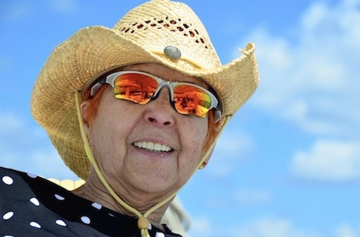

 During my life I have been involved with multiple facets of art creation. My work has been in various media including oil, pen and ink, watercolor, acrylics and weaving. Early on I studied under Diane Duvigneaud, a Chicago painter. Currently I take courses at the New Art Center in Newton MA, studying encaustic first with Anne Kneller and currently with Suzanne Lubeck. I am a member of the IEA. My encaustic work has been exhibited at the New Art Center in several “Creative Process” shows. I exhibited with a group of five encaustic artists at the Woodruff Gallery, Mashpee MA. “Cobblestones” was selected for the juried IEA show “In Flawed Abundance”.
To learn more about encaustic art, watch this video!